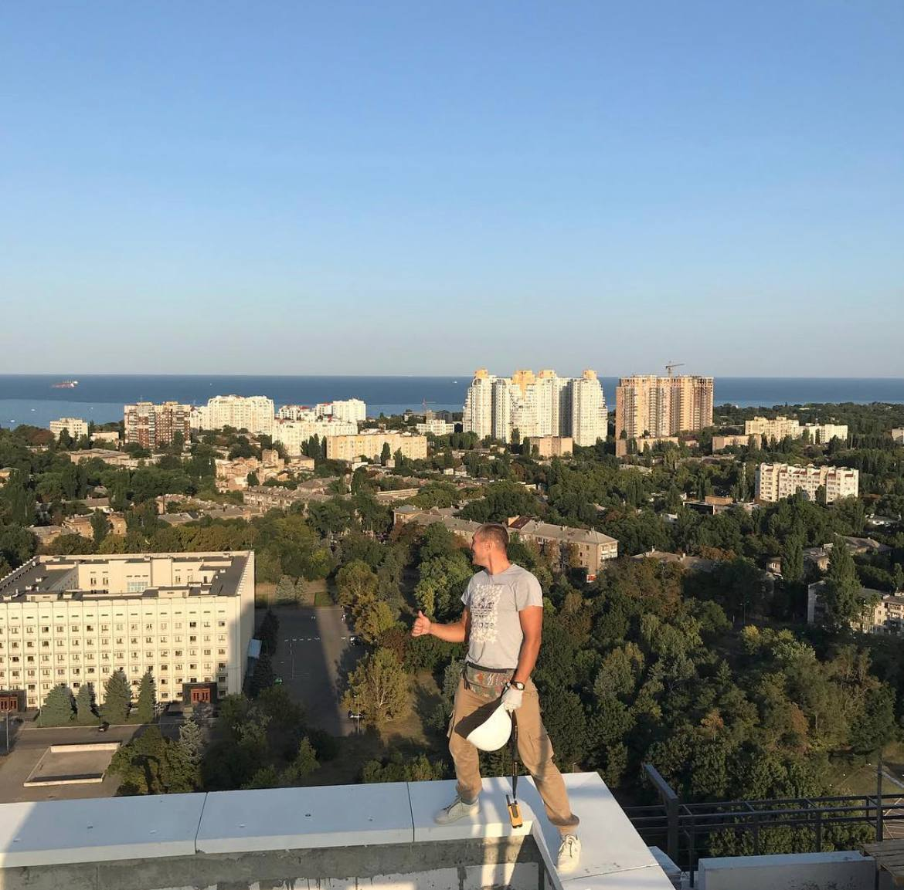

Вітаю Вас
Мене звати Денис мені 30 років 
Проживаю в місті Одеса
Я по професії сварщик.Робив у великій будівельній компанії 10 років, де ми збудували більше 30 багатоповерхівок по 25 поверхів.
До не давна нехотілось міняти професію,-виріс до бригадира була бригада із 30 чоловік,24 грудня прокинулися так як і всі від роботи пво,
робота затихла на 12 місяців.У мене молодший брат, за фахом він спеціаліст компютерних наук,
ми з ним сперечалися що будівництво - це тяжка робота, але я прийняв своє рішеня! 6 місяців назад ми зним сіли і обговорювали плани
наших робіт і фінансів. Почав замислюватись, що він все таки був правий про мою роботу, вона трудовмістка і забирала весь мій час який я міг приділяти своїй родині.
Я почав брати роботу під сумнів,
розумів що повинен рухатись далі та розвиватися. Почав приходити до брата і дивитися як він пише сайти, нічого не розумів як він це робе, задавав питання- він мені відповідав, але я розумію що треба самому
шукати відповіді і тут мені потраполо відео із уроком Фрілансер по житю. Поставив собі за мету, якщо буде Женя давати відео уроки то я обовязково буду вивчати IT-спеціальність.
ОСЬ я тут
Мої цілі
- Гнучкий графік
- Білше вільного часу
- Робота без ризику
- Задовільні умові праці
Хочу отримати від курсу
- Знаня
- Зрозуміти цю сферу
- Знайти себе в цій сфері
- Здобути впененість у собі в цій сфері